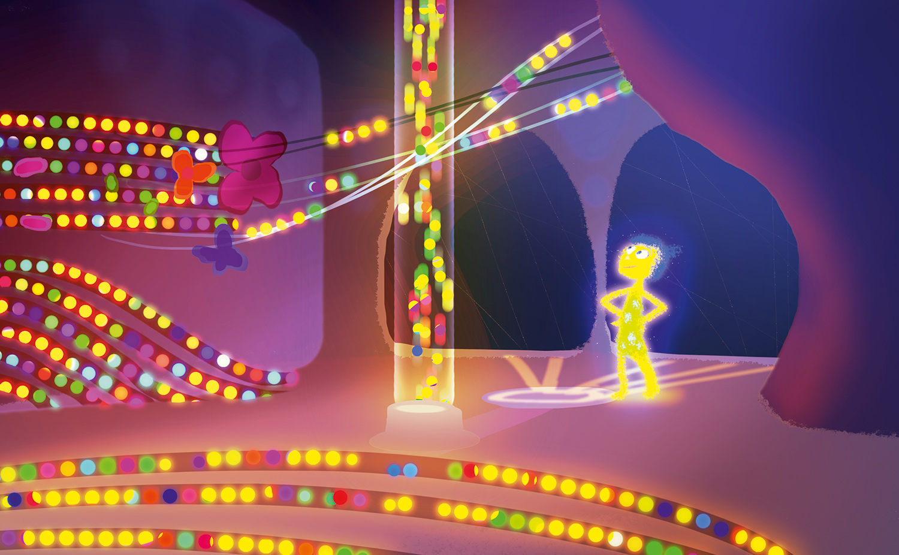
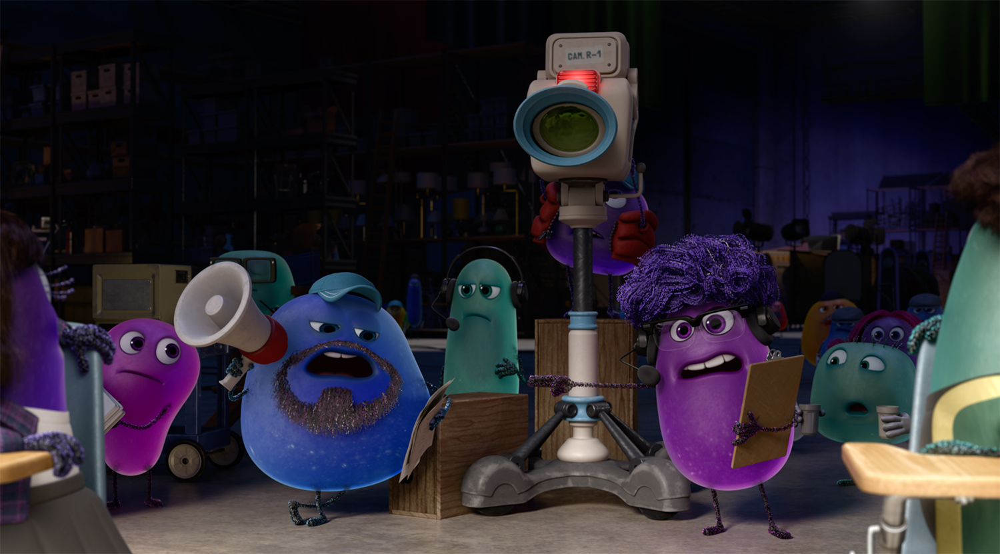
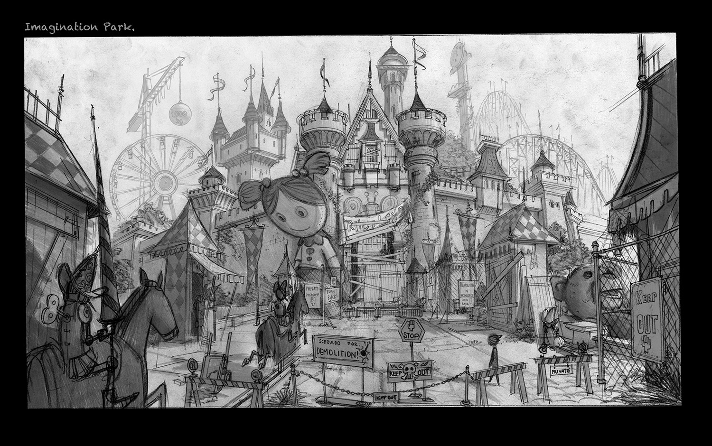
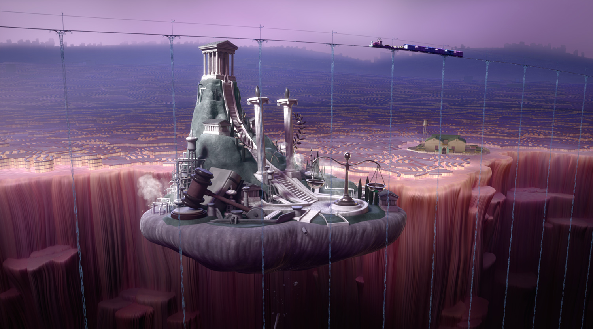
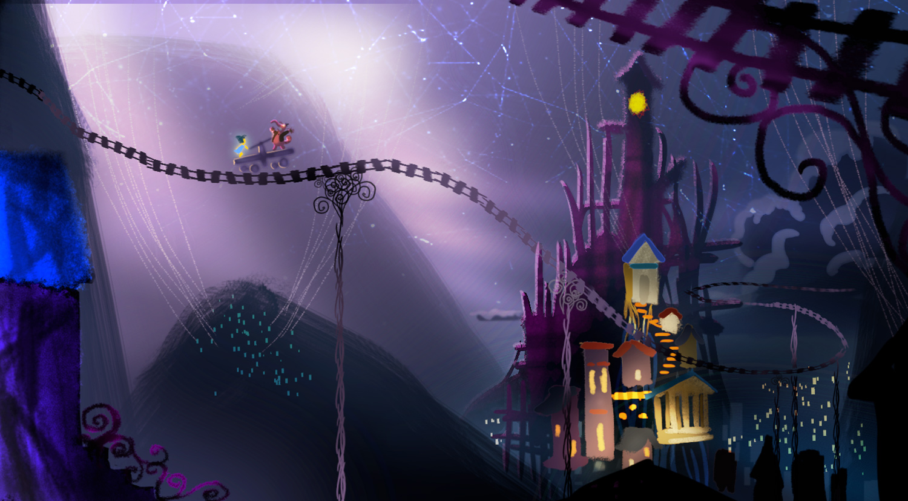
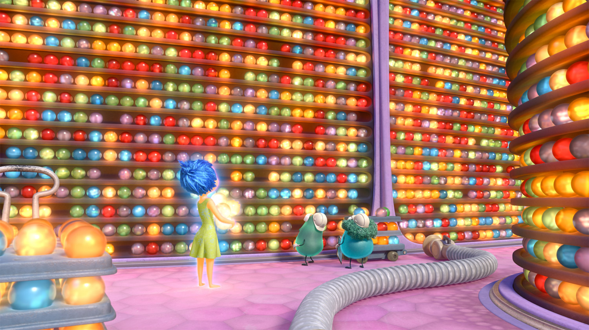

ABOUT
Mind vs Brain
“The film takes place in the mind, not the brain,” says Director Pete Docter. “We were very specific from the get-go. We didn’t want blood vessels and dendrites. The mind is metaphorical. We imagined our thought processes, memories, feelings.” But according to Daniel Holland, sets art director, the team used the physiology as reference. “We were inspired by shapes—the hypothalamus, pituitary gland, cells under a microscope,” he says. “Everything was heavily caricatured, but we wanted to start from somewhere that made sense.”
World Design

- Headquarters
- Headquarters is the control center in Riley’s mind where all five Emotions live and work, monitoring Riley’s day-to-day experiences and guiding her along the way.

- Dream Productions
- The writers here are not afraid to take risks and often dance on the edge of logic when it comes to Riley’s dreams.

- Imagination Land
- “Imagination Land is where all of Riley’s flights of fancy and daydreams are built full-size and come to life,” says Docter. “It’s a place where you go to play.”

- Islands Of Personality
- Riley’s Islands of Personality are powered by core memories, which are memories of extremely significant times in Riley’s life.

- Train Of Thought
- The Train of Thought is an all-terrain choo-choo with a self-generating track that delivers daydreams, ideas and other thoughts to Headquarters. It’s also used to transfer memories to different regions of Riley’s mind.

- Long Term Memory
- Long Term Memory is staffed by Mind Workers, including the Forgetters, who evaluate the usefulness of each memory and eliminate those that no longer seem relevant.